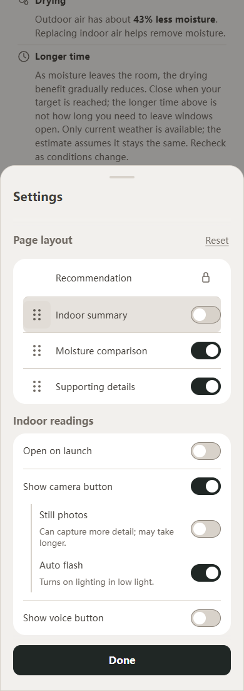
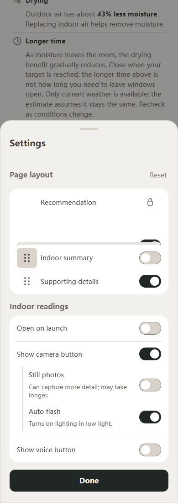
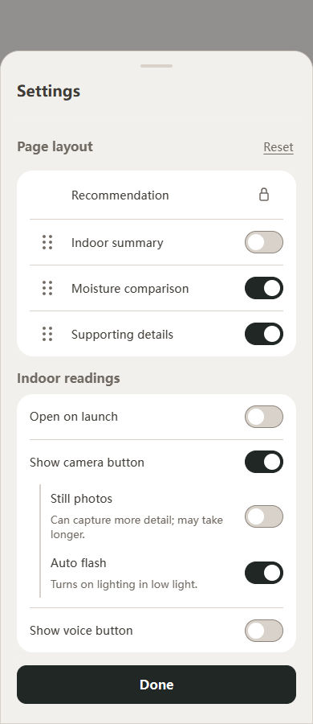
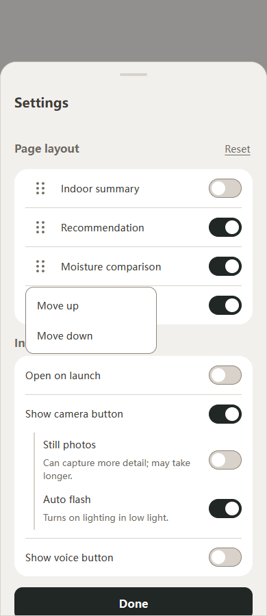
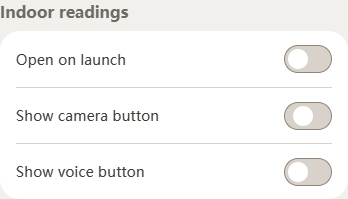
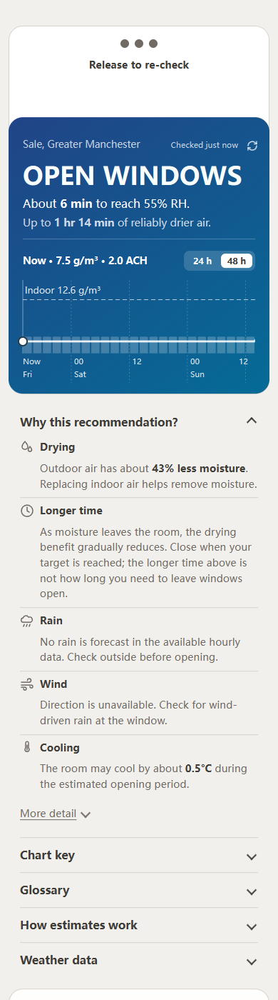
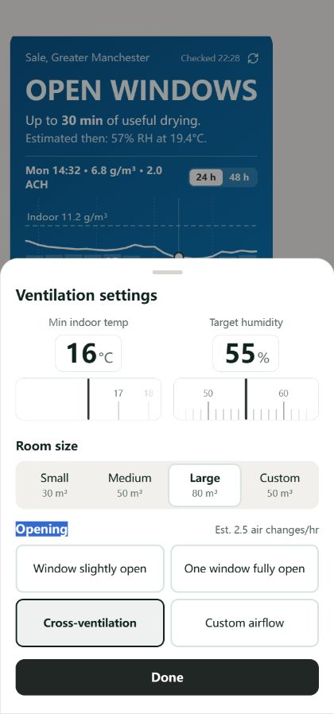
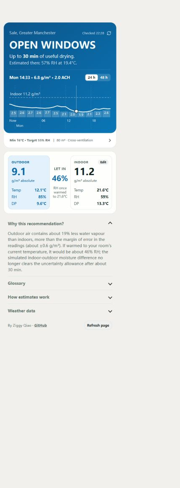
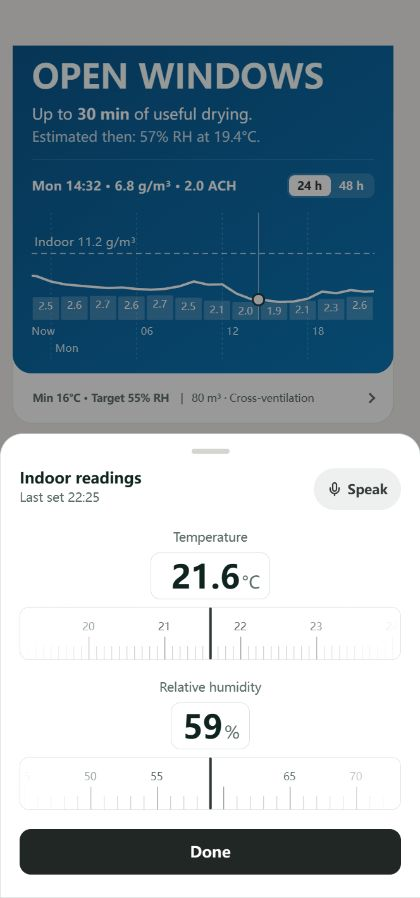
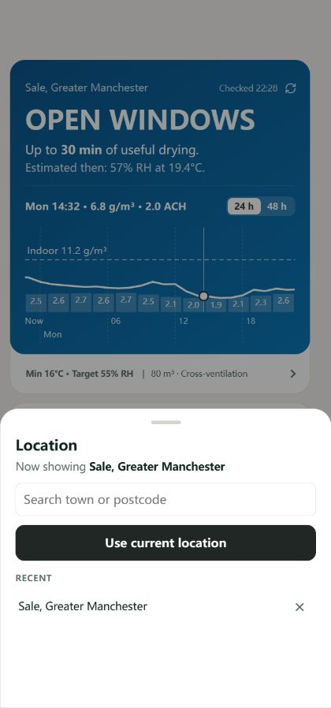

TARGET MET
At or near your target. Your humidity target is met.
Light: #027031 → #025446
Dark: #005725 → #004136 · 145°Drier · #FFFFFFUncertain · #FFD27AWetter · #FFB3A8
Warm neutral controls, clear weather meaning and consistent keyboard focus. Review Light and warm-charcoal Dark with deeper Dark verdict gradients and unchanged chart colours. These appearance controls affect this board only. Appearance is included in v0.7.11; values shown in specimens are illustrative, not live weather.
Written contracts: Foundations · Layout and navigation · Sheets and controls · Recommendation and chart · Readings and media. All documentation.
Use named roles for both appearances. Light uses warm grey surfaces and dark primary actions; Dark uses warm charcoal surfaces and pale primary actions. Dark verdict gradients use 84% of each original Light endpoint’s OKLCH lightness, a total 16% reduction, while retaining hue and as much original chroma as fits sRGB. The prepared v0.7.11 update reverses the coloured stops in both themes and uses a neutral grey-to-black background for checking and NO DATA. Forecast colours stay the same. The prepared v0.7.11 refinement reduces each ready gradient’s first-stop OKLCH lightness by 5% from its previous value in both themes, keeping second stops and the 145° angle unchanged. The approved Light ready-card text adjustment uses 85% white for location/timestamp text and 80% for secondary explanations; Dark, loading/NO DATA, controls and typography retain their styling.
#F2F0ED#FFFFFF#F0EEEB#E6E2DD#D9D3CC#D8D2CA#8D857B#403C37Secondary text: #706A63. Primary surface: #202725; its foreground has a separate role.
Settings ends with Appearance: native System, Light and Dark radios. System is the default and follows device changes while the app is open; Light and Dark remain saved overrides. Choosing an appearance preserves readings, drafts, open sheets and the active page.
| Role | Value |
|---|---|
| Page / panel | #171614 / #24221F |
| Control / selected | #302D28 |
| Hover / pressed | #3B3731 / #49433B |
| Subtle / essential border | #4F4941 / #A29A90 |
| Main / muted ink | #F1EDE6 / #BBB3A8 |
| Primary / hover / pressed | #D9D6CF / #EBE7DF / #C4BEB4 |
| Primary foreground | #24221F |
Keep inverse white separate from the primary foreground. Record/Stop waveform and Indoor dock icons follow the primary foreground; checked switches use it for their thumb. Camera image pixels, photo overlays, Light verdict gradients and chart colours retain their established treatment. Dark verdict backgrounds use the deeper palette below.
Forecast selections retain a white surface, #403C37 text, #E6E2DD hover and #D9D3CC press in both appearances. Sheet frosting uses 95% white tint in Light and 55% tint in Dark, with 4px blur and an opaque panel fallback. The bottom bar retains 55% tint in both themes.
Readings ready to review. Green means valid draft readings; confirmation still saves them.
Opaque dark pairs: main/panel 13.60:1, muted/pressed 4.71:1, essential border/pressed 3.52:1 and primary foreground/pressed 8.59:1. Frosting and device behaviour need separate rendered checks.
Source-verified current colours and moisture rules. These are illustrative specimens, not live weather. Recommendation, current moisture comparison and forecast-line colour each express a different calculation. Jump to the full AH chart or loading skeleton.
At or near your target. Your humidity target is met.
Light: #027031 → #025446
Dark: #005725 → #004136 · 145°A useful drying window, possibly limited by the forecast or temperature.
Light: #00648D → #214487
Dark: #004D6F → #103273 · 145°Wetter air, minimum-temperature limit, or immediate condensation risk.
Light: #963D14 → #7B242E
Dark: #7A2900 → #670E1E · 145°Uncertain benefit or no useful drying window.
Light: #6D5B00 → #633F03
Dark: #544600 → #4D3000 · 145°Line-colour keys repeat on each background to make the separate palette visible; they are review aids, not proposed new chart legends.
Outdoor moisture is reliably lower when both readings are expressed at the indoor temperature.
Ink #1769AA
Fill #E2F1FBThe shared-temperature difference is within or on the uncertainty margin.
Ink #8A6700
Fill #FFF3C4Outdoor moisture is reliably higher at the indoor temperature.
Ink #A23B2A
Fill #FFE8DFThe cards display actual AH at each air temperature, while the Outdoor tint and matching Let in text use the shared-temperature comparison. The Indoor card remains neutral. Condensation risk is a separate red warning when warmed RH reaches 100%.
The curve height plots actual outdoor AH. Its colour follows the shared-temperature moisture comparison across forecast time; amber covers the entire uncertainty interval, with smooth transitions outside it.
Tue 04:30 · 11.8 g/m³ · 2.9 ACH
| Chart layer | Current treatment | Meaning |
|---|---|---|
| Curve | White / amber / coral across forecast time | Actual outdoor AH height; colour from shared-temperature moisture comparison |
| Indoor reference | White dashed line at 70%; white label | Actual indoor AH baseline |
| Airflow bars / values | White at about 22% / solid white | Estimated ACH, without a wet/dry category |
| Time and day text | White at about 85% | Local forecast time |
| Grid / day separators | White at about 9% / 30% | Supporting structure |
| Cursor / point | White 65% / curve colour with #233D4E outline | Inspected time |
| Selected g/m³ reading | Curve colour; time and ACH stay white | Actual AH at the inspected point |
Getting local conditions…
Loading outdoor forecast…
-- Unavailable · #899493
Voice status and transcript panels use the current control surface and neutral text roles. The listening waveform follows the Record/Stop primary foreground.
Location and voice errors rely on wording. The warm theme adds no new success/error colour.
Independent colours can coexist. Green TARGET MET with a blue Outdoor card is valid. Red KEEP CLOSED due to temperature with a blue drier-air card is also valid. Neither makes the AH curve inherit that surface’s colour.
Old forecast-pill CSS retains pale green #DFF8ED with #087F5B-derived borders, but the current dashboard does not render those pills. The green TARGET MET gradient is active. The token --open (#111A17) is near-black, not success green.
All mappings here were checked in source. Alternate live outcomes and every chart/background contrast pairing still need visual checks. The current AH palette is retained by user direction; this is not a blanket contrast-compliance claim.
Static specimens above show each state. Try hover, press, or Tab on this sample:
Selection persists. Pressing is temporary. Keyboard focus adds a 2px outline with a 2px clear gap outside the visible control: main ink on neutral surfaces and white on the verdict. The ventilation summary and dashboard explainer headings retain wider horizontal focus boundaries. Disabled controls do not react to hover or press.
Upward, downward, horizontal and diagonal swipes or drags must never also activate a tap action. This applies to page controls, switches, sheet headers/footers, links and disclosures.
Scroll or perform the intended component gesture. Movement of 8 CSS pixels or cancellation suppresses the resulting click, even after returning to the starting point.
Stop movement without toggling the underlying control. A new tap after scrolling settles activates normally.
Settled taps, mouse clicks, keyboard and assistive activation remain available.
Preserve chart inspection, rulers, camera crops, reorder handles and sheet/pull dismissal. Never disable every control or intercept native scrolling.
Illustrative specimen: this flat panel strip is hidden by default and second in the default order; enabling it places it below the pinned Recommendation unless reordered among the optional sections; the controls shown here are visual samples.
20px outer radius, subtle border, no shadow. The 1px divider is vertically centred; units and reading age are muted. At 320px, the age sits below the Indoor heading. All three actions retain 44px targets in the app.
The moisture comparison panel also has a 20px outer radius; its two inner cards use 16px. The verdict and neutral footer share 20px outer corners.
These controls affect only this review board. They do not change the app’s settings.
Blank or out-of-range committed entries restore the saved value without saving. Range guidance is linked to the field and announced politely once. The restored field stays valid, with its ordinary border and focus treatment. New editing, ruler/stepper adjustment or sheet dismissal clears the message.
iPhone/iPad verdict durations open a sheet with a temporary 1-180 minute value and stacked ruler. The sheet uses a 1.2rem Settings-style title, the existing mobile drag handle, a 52px outer numeric field height, an 8px field-to-ruler gap and a 20px ruler-to-Start gap. No timing-context paragraph or separate bottom Close action appears.
Current local refinement: opening durations on Overview and Why, including More detail, share dotted-underlined timer controls. Why uses dark underline and focus colours; clock times and hourly weather periods remain text. Start closes the sheet before the Shortcut handoff. All sheets return focus quietly unless the opener had visible keyboard focus at activation. Header close controls appear from 640px; mobile retains drag dismissal and existing Done actions.
The centred 20px help symbol sits 12px from the title and has a user-requested 32px-wide, 44px-tall target and opens the shared Shortcut installation link. Verdict targets retain original text spacing, with dotted underlines at 50% opacity. Timer handoffs were confirmed by the user from Safari and the Home Screen app. See the written system for behaviour and remaining device checks.
Panel selected segment, persistent ink border, bold name. Arrow keys move the radio selection.
1px borders at rest; 2px dark border and a lighter fill for selection.
Equal 88px fields. Whole-degree minimum temperature. One focus ring around value and unit.
Against white: 1.50:1 versus 3.64:1. A pale divider should not be the only clue that a number is editable.
v0.7.11: all five sheets use 95% white tint in Light and 55% tint in Dark, with 4px blur. The pill menu remains at 55% in both themes. Content scrolls behind pinned headers and existing footers. At rest, the base glass runs continuously through the header and body, avoiding a join. Once content reaches the header, its pinned glass cover activates and the base excludes that region; returning above the overlap restores continuous glass. Existing footers retain their own matching glass. There is no double tint or fade. Measured padding preserves the initial 16px gap and lets focused and last controls clear pinned areas. The scrollbar stays between them. Glass works independently of custom-scrollbar support; unsupported blur uses solid panel surfaces and forced colours use system surfaces. Timer retains its fixed Start action; Settings, Indoor, Ventilation and Location gain no footer. Camera and voice retain their existing actions. Titles, controls, text colours and typography stay unchanged pending approval of any readability adjustments. These specimens reuse the private production scrollbar controller. Emulated checks do not establish installed iPhone Home Screen behaviour.
Overview layout and Indoor readings
End of sheet content
5m ago
Temperature and relative humidity
End of sheet content
Minimum temperature, target humidity and room settings
End of sheet content
Search, results and current-location status
End of sheet content
Duration and timer setup
End of sheet content
Capture, review and confirmation
End of sheet content
Listening, transcript and reviewed readings
End of sheet content
Press: subtle handle surface; early swipes scroll. Ready: at 300ms, dark grip and soft row highlight. Move: an inert, full-opacity preview follows vertically; neighbours slide into a measured gap. Drop: save once and settle in 160ms. Cancel: return to the original slot without saving. No scale jump, thick marker or faded row. Reduced motion preserves finger tracking with immediate settling; forced colours outline the preview and gap.


Three expanded groups: Overview layout, Indoor readings and Appearance. Panel-surface 20px cards, regular-weight labels, subtle dividers, 56px minimum rows, shared 8px internal gaps and aligned switches. Headers and cards use an 8px gap; groups stay 16px apart. Nested camera options use an inset rule and hide with Show camera button; their saved values are retained and restored on enabling. Hidden options take no space or keyboard stops. Help text scales with the body.



Reset is an underlined 44px action at the right of the Overview layout heading; the header wraps at enlarged text. It restores order and visibility only: Recommendation always shown and pinned first, followed by hidden Indoor summary and shown Moisture comparison and Supporting details. Preserve saved relative order and visibility of the three optional boxes. Touch dragging requires a 300ms hold followed by 8px movement; an immediate swipe scrolls instead. A stationary hold clears on release without opening the menu, and arming darkens the grip and softly highlights the row. The full-opacity row then follows the finger vertically as neighbours make a row-height gap, with 8px midpoint hysteresis. Drop and menu moves settle over 160ms ease-out; cancellation returns to the original slot. Reduced motion removes settling animation. The inert preview stays inside the body, clear of pinned controls. Scroll only to reveal clipped reorder rows: below-header top and actual body bottom, 24px zones, 200ms dwell and a 160px/second maximum. Stop as soon as rows are visible; never scroll into unrelated settings when the reorder list fits. Mouse/pen dragging begins after 8px movement; the parent retains ownership of spacing between page sections.
Recommendation stays first. The coloured card slides over the stationary ventilation strip; when it passes the strip’s resting bottom, the strip and every following visible section move by the same excess distance. Keep 16px gaps throughout pulling and settling. The cue remains on Recommendation’s neutral panel backing. Deliberate downward pulls can start on controls or the chart without activating them; chart taps and horizontal gestures inspect. Open sheets, help popups, reorder menus and native popovers lock refresh and clear active pull feedback.

The parent owns spacing between sections; components own internal spacing. One shared token sets a 16px gap in every order and visibility configuration, at all widths and text sizes. Hidden boxes create no gap, and the footer stays last.
Zero vertical outer margins on page boxes. Saved order controls visual and reading order; Recommendation is always shown and first; defaults then keep Indoor summary and Moisture comparison hidden and show Chart key. The three optional boxes can be reordered; Recommendation stays visible when they are all hidden.
These grouped specimens include disclosure examples. In the current app, Chart key on Overview and Why this recommendation? on Why have permanent headings; the three reference disclosures and More detail remain independently expandable. See the current presentation contract.
Main accordion headings use 1rem / 1.4, weight 700 and main ink. Content labels stay at body size; category labels are smaller and muted. More detail remains compact, regular and underlined. Open the four disclosure specimens to compare them with the always-expanded Chart key.
Drying Outdoor air has about 36% less moisture. Replacing indoor air helps remove moisture.
Longer time As moisture leaves the room, the drying benefit gradually reduces. Close when your target is reached; the longer time above is not how long you need to leave windows open.
Rain Light rain is forecast. Use only a sheltered window where water cannot enter; close it if water blows in.
Wind Coming from the south-west. Avoid exposed south-west-facing windows if rain blows towards them.
Cooling The room may cool by about 0.8°C during the estimated opening period.
Compare moisture densities at the same temperature and explain the outcome.
Explain the changing drying benefit and the model’s horizon.
Show hourly rain amounts, precipitation chance and coverage limitations.
Show reported speed and where the wind blows towards.
Explain room and opening assumptions, estimated airflow and limitations.
Outdoor AH
Line colour shows the drying benefit of ventilation. ≥ means the rain-spell total is incomplete.
Illustrative open-window outcome. Decorative 20px outline icons with 1.2px strokes identify row topics; an 8px gap separates the fixed icon column from the text. Labels sit above their explanations with 8px internal gaps; entries have 16px gaps without dividers. Keep the heading and secondary disclosure unchanged.
Drying Outdoor air has about 36% less moisture. Replacing indoor air helps remove moisture.
Longer time As moisture leaves the room, the drying benefit gradually reduces. Close when your target is reached; the longer time above is not how long you need to leave windows open.
Rain Light rain is forecast. Use only a sheltered window where water cannot enter; close it if water blows in.
Wind Coming from the south-west. Avoid exposed south-west-facing windows if rain blows towards them.
Cooling The room may cool by about 0.8°C during the estimated opening period.
Compare moisture densities at the same temperature and explain the outcome.
Explain the changing drying benefit and the model’s horizon.
Show hourly rain amounts, precipitation chance and coverage limitations.
Show reported speed and where the wind blows towards.
Explain room and opening assumptions, estimated airflow and limitations.
Cover all 11 model statuses, immediate/timed limits, cold-room reversal, cooling-hidden removal and unavailable weather. Secondary disclosures use regular-weight underlined body text, a vertically centred chevron in a 1rem square with an 8px layout gap, a content-width 44px minimum target and a 2px outer keyboard focus ring. Bold full-width headings and far-right chevrons belong to the main accordions. More detail starts collapsed, preserves its state through updates and returns focus safely when hidden.
The last update is the last successful fetch. Pending and failed refresh messages remain separate. Below 20rem, labels stack above values.
Outdoor AH
Line colour shows the drying benefit of ventilation. ≥ means the rain-spell total is incomplete.
21.3°C 22px Indoor strip reading
Ventilation settings 20px title
Body and typed input · 16px
Controls · 14px; supporting accordion headings · 16px
Metadata · 12px. The Indoor category and chart annotations may remain 11px.Manual edits save immediately; the header tick closes. Voice changes require review and Apply. Rulers support typing, dragging and arrow keys. Sheets contain their scroll, adapt to the visible viewport, and return focus on dismissal.
Preserve the current centred 496px maximum app shell. Location, voice, custom panels, loading, errors and disabled states are specified in the full written system.
The app uses the reviewed warm palette and current component states. This board illustrates current 4px geometry, moisture rules and v0.7.11 appearance work. The historical v0.7.2 notes below describe their original period; current layout pins Recommendation first.
The written system records the remaining acceptance checks and behaviour contracts. The Manual input recovery specimen records the selected restore-and-explain behaviour.
These checks are recorded in the written system. The updated AH line colours are shown above.
These historical captures show the app before the warm palette was applied. Open each image for the full view.



